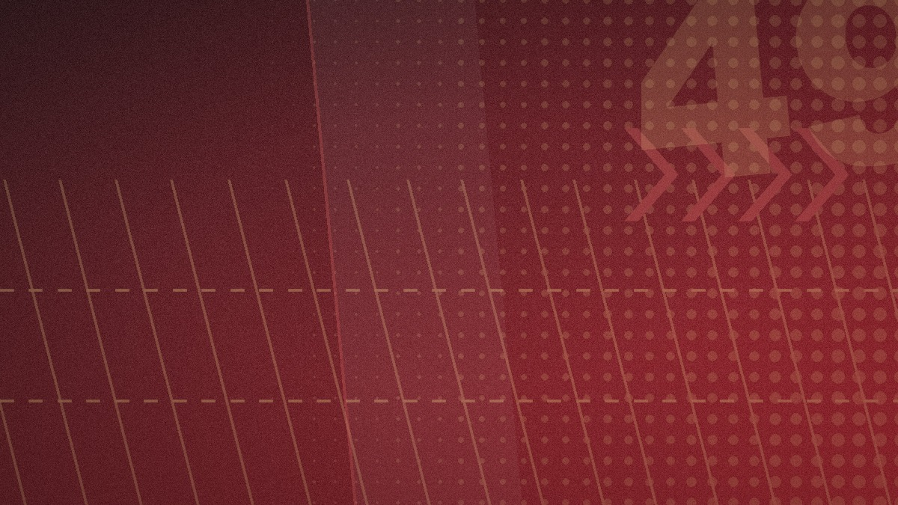
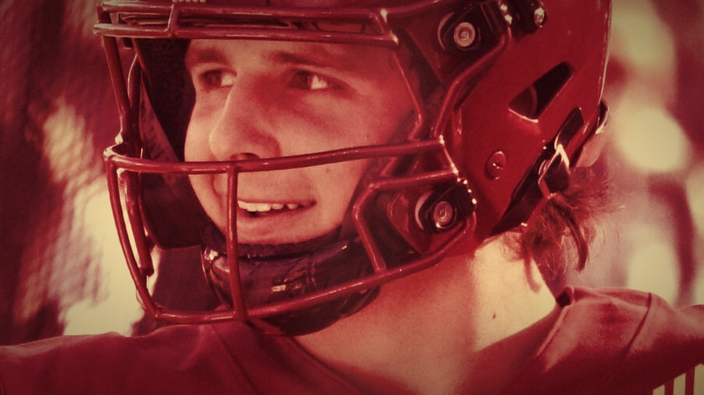
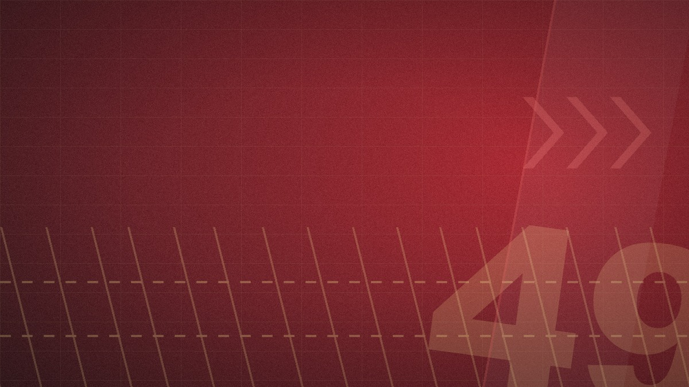
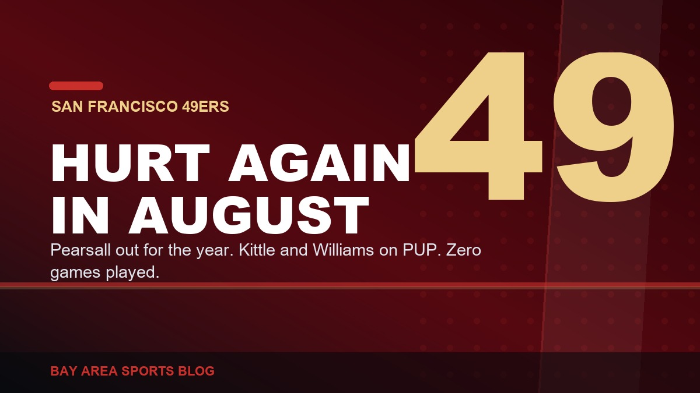
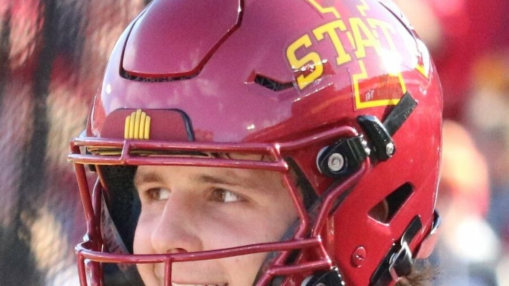

49ers

Purdy Is Throwing 70-Yard Touchdowns to Guys You Have Never Heard Of, and It Is Getting Ridiculous
A pair of 70-yard scores, a deep touchdown to a receiver who signed less than 24 hours earlier, and 24-of-28 over two practices — with five receivers hurt.

Brock Purdy Is 147 Passes From Being the Most Efficient Quarterback in NFL History. Nobody Wants to Say It Out Loud.
A 104.0 career passer rating against an all-time record of 102.2, and he is 147 attempts — five games — from qualifying. The last pick in the draft is about to own the record book.

They Finally Gave Brock Purdy a Fight. He Won It Going Away.
The most competitive practice of camp — picks, punch-outs, a defense that finally punched back — and Purdy went 12-of-17 on 32 team snaps throwing to guys signed off the street.

Brock Purdy Is Carving Up Training Camp. Twenty Guys Watched Him Do It From the Sideline.
13-of-14 in team drills, three straight red zone touchdowns and a Dougie in the end zone. On the same field, twenty players were unavailable. Both things are true.

Four Signings in a Week: Okoronkwo, Irwin, Deguara, Hodge, and a Roster Held Together With Tape
A Super Bowl edge rusher off a torn triceps, a Stanford kid coming home, a blocking tight end and a Pro Bowl gunner. Every move makes sense. Needing all four in August is the problem.

The 49ers Signed KhaDarel Hodge, and That Tells You Everything About This Receiver Room
A 31-year-old Pro Bowl gunner with three catches last season and Raheem Morris ties. Fine player, no complaints. But it is August fifth and we are already signing bodies.

Purdy Is Ripping It in Camp, and That Throw to Demarcus Robinson Was a Dime
Over two defenders, back of the end zone, dropped in a bucket. Brock is playing fast and free again, and D-Rob has been the quiet best story of camp. Now just stay healthy.

The 49ers Love Raheem Morris, and It Is Because He Lets Them Play Football
Five-down looks, new coverages, Warner and Greenlaw yelling at each other again, and a coordinator who tells this defense to go play instead of go think. It is the one good thing at this camp.

It Is August and the 49ers Are Already Hurt. Again.
Pearsall out for the year, Kittle and Mykel Williams on PUP, four receivers off the field on the same day, and half a defensive line on the report. Nobody has played a snap yet.

Ricky Pearsall Is Out for the Year, and This Kid Just Cannot Catch a Break
Season-ending IR, PCL surgery in the next couple of weeks, and a six-to-12-month road back. Pearsall still has not gotten one clean, healthy run at his career.

Kyle Shanahan Update: He's Turning the Corner, and Camp Is Feeling It
Pads are on, practices are getting physical, and the coach is closer to being fully back in the middle of it, less than three weeks removed from a serious car accident.

De'Zhaun Stribling Keeps Balling Out in Camp, and a Starting Job Is Starting to Look Inevitable
The rookie wide receiver isn't flashing for a day anymore, he's stacking good day after good day with Brock Purdy. At this rate, a Week 1 starting job looks like the floor, not the ceiling.

Deebo Samuel Is Coming Home: 49ers Bring Him Back on a One-Year, $7 Million Deal
A low-risk, high-reward reunion. Seven million dollars buys back one of the most uniquely dangerous weapons Kyle Shanahan's offense has ever had, on a roster that no longer needs him to be the whole answer.

Dre Greenlaw Hit Too Hard on Day One of Pads, and Christian McCaffrey Still Calls Him His Favorite Player
Greenlaw came out flying on the first padded practice of camp, and McCaffrey wasn't thrilled to be on the wrong end of it. He's also said Greenlaw is his favorite player in the league. That's what real veteran leadership looks like.

Purdy and Rookie De'Zhaun Stribling Are Already Cooking, and This Niners Roster Is Loaded
Real chemistry with the rookie wideout, plus Evans and Kittle in the fold. On paper this is the deepest group Purdy has thrown to.

Kyle Shanahan's Car Accident Was Scarier Than We Knew, and Niner Nation Just Needs Him Healthy
A severe concussion, a broken nose, three broken ribs, a broken hand, and 40-plus stitches from the July 14 crash. He'll be limited early in camp while Chris Foerster picks up the load. Heal up, coach.

Jerry Rice Says This Is the Year the 49ers Break the Super Bowl Drought, and He Would Know
"I think this is the year for the Niners." At Lake Tahoe, the greatest 49er ever called his shot for 2026: the statement is to win it all. The drought started in January 1995, and he hung the last banner.

This Might Be the Best Team Kyle Shanahan Has Ever Had
Purdy, a healthy McCaffrey, Mike Evans and Christian Kirk, and Bosa and Warner back from injury. The deepest roster of the Shanahan era. If they stay healthy, this could finally be the year.

Team of the Decade: When the 49ers Ran the NFL
Five Super Bowls with Montana, Rice, and Young. The gold standard of a generation.

The NFL Blackballed Colin Kaepernick for Kneeling, and Everyone Knows It
A 29-year-old Super Bowl quarterback with a 16-to-4 touchdown-to-interception season, and thirty-two teams suddenly forgot how to sign a QB. It was never about talent.

Brandon Aiyuk Has Gone Full Antonio Brown, and It's Hard to Watch
Aiyuk was one of the 49ers' cleanest success stories. Since the Super Bowl loss to Kansas City, it turned into something much stranger.